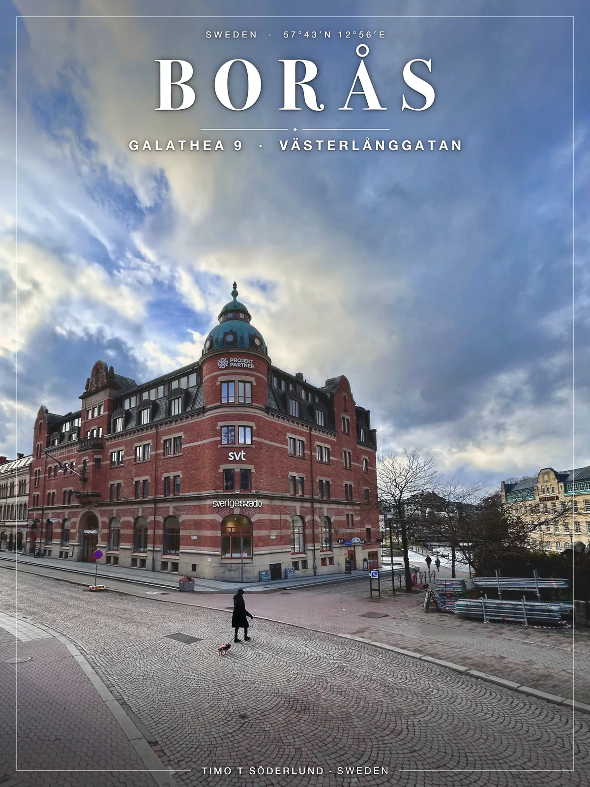

Galathea 9 · Västerlånggatan
Historic Telegrafen Building (1913) · Borås, Sweden
English
Erected in 1913 as Borås's historic telegraph station (Telegrafen), the red-brick landmark Galathea 9—crowned by its copper-green corner turret—has long been a hub for communication and today houses SVT and Sveriges Radio along Västerlånggatan in central Borås, Sweden. A solitary pedestrian walking a small dog crosses the cobblestones. Photographed by Timo T Söderlund for Borås Poster Project 2026.
Svenska
Uppförd 1913 som Borås anrika telegrafstation (Telegrafen) har den röda tegelfastigheten Galathea 9 med sitt koppargröna hörntorn länge varit en knutpunkt för kommunikation och inrymmer idag SVT och Sveriges Radio längs Västerlånggatan i centrala Borås. En ensam flanör med sin lilla hund korsar kullerstenen. Fotograferad av Timo T. Söderlund för Borås Poster Project 2026.
Photographer & Edition: Timo T Söderlund · Borås, Sweden (2026)